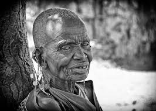
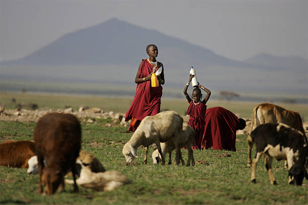
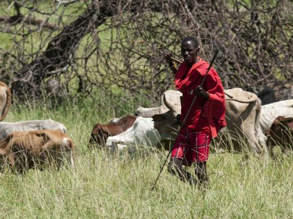
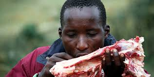
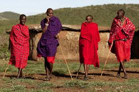
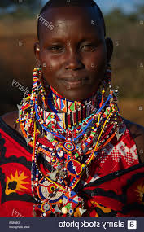
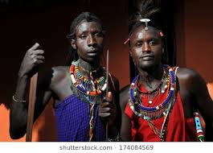

History
"Masai" is a name of Hebrew origin, and it means "Gods Work".
According to their oral history, they originated from the lower Nile valley (Northwest Kenya) and began migrating around the 15th century, arriving in a long trunk of land stretching from what is now northern Kenya to what is now central Tanzania.
Economic Activities
Cattle are central to Maasai economy. They are rarely killed, but instead are accumulated as a sign of wealth and traded or sold to settle debts. Their traditional grazing lands span from central Kenya into central Tanzania.
 Political Organization
The age system is the most distinctive feature the Maasai society.
This system features stratified age sets spaced apart by about fifteen years.
This dual system of accountability entails an indecisive combination of rivalry between adjacent age sets; power struggles which create hostility between the young and the old.
The dual system creates a strained relationship between warriors and elders over herd theft and adultery by the warriors.
Through a display in force and service, the junior warriors graduate to senior warrior status in a ceremony known as Eunoto becoming apart of the home-guard and are allowed to start their own families.

Food
They mainly feed on meat,milk and blood since they get it easily and directly from the livestock they keep.
They believe that the blood from animals have healing properties.
Clothing
It varries with sex,age and place
Young men wear black for several months after circumcision although red is prefered among other colors including black,blue.
Checked and striped clothes are also worn
  